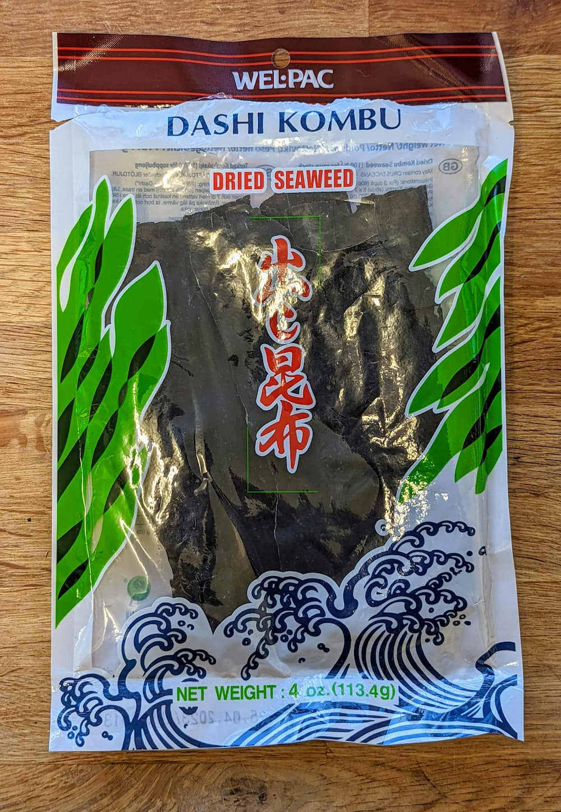

I’ve recently been exploring Japanese cuisine, and in doing so I found out about a type of seaweed called kombu. When I use a new ingredient I like to look up its nutritional properties, and I learnt that kombu contains extremely high levels of iodine. This post start with an introduction to kombu, and a discussion of whether too much iodine is something to worry about or not. I then describe my efforts to measure iodine at home, in order to find a way to cook with kombu without consuming so much iodine, should you wish to do so.
What is kombu?
Kombu is a kind of kelp seaweed, found in oceans all over the world. It grows quickly and in reasonably shallow water, so is easy to harvest in large quantities. In Japanese cooking, dried kombu is soaked in water to produce a flavourful liquid called kombu dashi. This provides the base for miso soup as well as many other broths, stews and sauces.
In 1908, Japanese biochemist Kikunae Ikeda discovered that the distinctive umami taste of kombu comes from glutamic acid, and figured out how to manufacture this commercially in the form of monosodium glutamate (MSG). These days many Japanese cooks buy dashi powder rather than making it at home; most powders have added MSG, and some don’t even contain any kombu.
In the west, kombu is becoming increasingly popular in vegan and vegetarian cooking. It’s often added to herbal supplements and vegan milk substitutes as a rich natural source of iodine.
Too much of a good thing?
Many seaweeds are pretty good sources of iodine, but most are no competition to kombu. A bowl of noodles served in a kombu dashi-based broth might contain 10 mg of iodine, which is 70 times the recommended daily allowance!
Is that too much? It’s hard to say. Official health bodies differ in how much iodine they are willing to say is safe, but in all cases that bowl of noodles is going to be pushing it (the UK, US and Japan list the maximum safe regular daily intake as 0.5mg, 1.1mg and 3mg respectively).
Iodine is used for the production of key thyroid hormones. The thyroid tries to regulate its uptake of iodine so that it produces an appropriate quantity of hormones, regardless of how much iodine is in your food. However in those with thyroid conditions or previous iodine deficiency, excessive iodine consumption can cause this regulatory system to break down. Confusingly this may lead to either overproduction or underproduction of thyroid hormones, depending on precisely how things go wrong.
I had a look for real world examples of iodine toxicity, and came across the case of Bonsoy soy milk in the late 2000s. Australian doctors noticed a cluster of patients with thyroid dysfunction, and identified the soy milk as a culprit. At the time Bonsoy was flavoured with kombu, and had a similar iodine concentration to kombu dashi. Eventually there was a class action lawsuit settled for $25m divided among 500 people who had been harmed by the milk, and the product was recalled. Participants in the lawsuit described a wide variety of issues, including severe hyperthyroidism in a woman who consumed three to four glasses of the milk per day, and hypothyroidism in the newborn baby of a woman who drank 500ml per day.
This example shows that consuming a large (but not unrealistic) amount of dashi every day could cause serious problems for some people. On the other hand, Japanese people eat a lot of kombu, generally without any issues. This paper finds that the average person in Japan consumes about 1 mg-3 mg iodine per day, mostly from kombu – presumably this corresponds to some people eating much less while others have much more. There are certainly some reports of iodine-induced thyroid problems in Japan, but not enough for people to be particularly concerned.
One complicating factor is that certain substances (called goitrogens) inhibit iodine uptake by the thyroid, or inhibit production of thyroid hormones. Some common goitrogens include tofu and other soy products; green tea; and cruciferous vegetables such as cabbage, brocolli and pak choi. These are often part of a Japanese diet, and it’s possible that they help protect Japanese people from negative effects of high iodine consumption.
So far I’ve been talking interchangeably about the amount of iodine in kombu itself, and the amount in the resulting dashi stock. It turns out that these are basically the same: it doesn’t take long to soak out almost all of the iodine from a piece of kombu. According to a Japanese paper from 1989, 99% of the iodine ends up in the water if you boil kombu for 15 minutes, and 98% if you soak kombu at room temperature for 3 hours.
This suggests that you could make a “low-iodine dashi” by pre-soaking kombu to remove some of the iodine, as long as a brief soak leaves behind enough flavour.1
Measuring iodine at home
I decided to have a go at making a low-iodine dashi, which meant figuring out the minimum amount of soaking needed to remove most of the iodine. To do that, I needed a way of measuring iodine. You can send a sample to be analysed in a commercial lab but it costs several hundred pounds – definitely out of my budget for this project, so I’d have to do it myself. I wanted to be able to detect iodine at the concentration I was expecting in dashi, about 30 mg per litre. That’s a pretty small quantity, but not microscopic: a 30mg cube of iodine is about 2mm on each side.
At school we learnt that you can detect iodine using the starch-iodine test. Pour an iodine solution onto something containing starch, like a cut piece of potato, and it’ll stain the starch a deep blue-black. We usually used this as a test for starch, but it also works to test for iodine.
I tried putting a couple drops of dashi on some corn starch and … nothing happened. The problem is that iodine is very reactive, and so dashi doesn’t contain iodine in its elemental form. Instead it’s likely to be present as iodide ions, which don’t cause the same colour change.2
To use the starch-iodine test, we need to convert those iodide ions into iodine. At this point I was reaching the limits of my rust chemistry knowledge, but luckily there’s a famous experiment involving exactly the reaction we want, called the iodine clock reaction. You start with a solution of sulfuric acid and hydrogen peroxide, and add starch, sodium thiosulfate and potassium iodide. The hydrogen peroxide oxidises iodide to iodine, but the sodium thiosulfate converts the iodine back to iodide, acting too quickly for a significant concentration of iodine to build up. When the sodium thiosulfate runs out, the iodine can now remain in solution and form a complex with the starch, suddenly turning the solution black.
For our purposes we can ditch the sodium thiosulfate – we just want to use the fact that under acidic conditions, hydrogen peroxide will convert iodide to iodine. Hydrogen peroxide is easy to find, since it’s used as a household cleaner and disinfectant. I ordered some food-grade 3% hydrogen peroxide off the internet: food-grade means there are no additives that might interfere with the reaction, and 3% is sufficiently dilute that it’s pretty safe. The sulfuric acid used in the iodine clock reaction is harder to get hold of, but any acid will do. Distilled vinegar works just fine.3
To make the experiment somewhat quantitative I bought some pure potassium iodide, which I could use to make solutions with a known concentration of iodine and compare with the dashi.4
Experimental results
Somewhat to my surprise, the reaction worked exactly as hoped! A full description of what I did is detailed below in Appendix: experimental details. In short, I found that my usual kombu dashi contains about as much iodine as I’d expected. I tried simmering a piece of kombu for five minutes, discarding the water, then soaking overnight. This led to a dashi with a low enough level of iodine that I couldn’t measure it (less than 0.3 mg/L). A similar process where I soaked the kombu at room temperature for 30 minutes then discarded the water led to a dashi with about 0.5 mg/L – still within the NHS’s safe limit even if you drink a litre of it every day.
Taste test
Finally I needed to check how this process impacted the taste of the dashi. I anticipated that I might lose a lot of the glutamates, since they’re highly soluble. But that wouldn’t be a big problem since I could just add some MSG.5 Kombu dashi usually is a little thicker than water (likely due to complex polysaccharides similar to those in seaweed-derived thickening agents like agar agar and karageenan) – I was interested to see if this was impacted, although for some applications this property of dashi might be unnoticeable or undesirable.
I prepared some low-iodine dashi as described above – either simmering kombu for 5 minutes or soaking for 30 minutes, then soaking in fresh water overnight. I found that the dashi from simmered kombu was very thin, and a little bitter, while the dashi from soaked kombu had more body and a better flavour. As expected they both tasted low in glutamates, but after adding some MSG I was pretty happy with the end product from the pre-soaked kombu.
Conclusion
I’m still not sure how worried most people should be about iodine intake from kombu. If you don’t have any risk factors and only eat it occasionally then it seems like you’ll almost certainly be fine (although no one really knows if there are any subtle long term effects). What I do think is clear is that people working with kombu should be aware of the high levels of iodine, and avoid using amounts much higher than those traditionally used. Prepared foods made with kombu ought to have some indication of their iodine content, or at least say how much kombu was used.
If you do want to avoid excessive iodine (out of an abundance of caution, or because you have specific risk factors) then soaking kombu for 30 minutes and discarding the soak water is an effective way to remove most of it.
Appendix: experimental details
If you want to try similar experiments yourself, or are just curious, here are the more technical details and results of what I did.
After some initial tests to check that the reaction really worked, I settled on a reproducible procedure: mix together one drop starch solution (from 3g cornstarch boiled with 97g water), one drop distilled vinegar, one drop of 3% hydrogen peroxide, and five drops of the sample liquid to be tested, and observe the colour. Iodine in the sample causes the mixture to turn anywhere from pale pink to deep blue-black, with the colour change stabilising after about 10 minutes.
Next I moved on to investigating how much iodine is removed from kombu after boiling for different amounts of time. I cut six small pieces of kombu. I boiled five of the samples for different lengths of time between 15 seconds and 15 minutes, and left the remaining sample untouched. I then boiled each of the six pieces in fresh water for 10 minutes to extract the remaining iodine, and boiled the resulting liquid to concentrate it (ending up with 17 ml of liquid for each gram kombu). I also prepared three solutions of known concentrations of potassium iodide.
Kombu dashi has a slightly yellow colour, so to help identify the colour change from the reaction I ran a series of control experiments where I added drops of water instead of vinegar and hydrogen peroxide.
There was no visible colour change for the 2 minute or longer samples, or for the 3 mg/L solution. The 50 second sample had a slight colour change, and the 15 second sample was a bit darker, but still a little lighter than the 30 mg/L solution. The untreated kombu had the most remaining iodine, turning a deep black and looking most similar to the 300 mg/L solution.
The results fit my expectations: the samples were about six times more concentrated than dashi prepared in the usual way, so suggest that normal dashi contains roughly 300/6 = 50 mg/L iodine, close to our previous guess of 30 mg/L. They also confirmed my hopes that even a very brief period of soaking or boiling could remove a lot of the iodine, with just 15 seconds of boiling already removing about 90%.
Most kombu dashi recipes suggest either cold soaking kombu or heating it at a bare simmer, never boiling hard, saying that this spoils the flavour. So I wanted to try soaking and simmering, and I also wanted to more accurately figure out how much iodine was left. This time I took two pieces of kombu – one was simmered for 5 minutes, and the other was soaked for 30 minutes. I then soaked each piece in fresh water overnight to extract the remaining iodine, before boiling the samples until only a few drops remained – just 1.6ml liquid per gram of kombu. I prepared three known concentration solutions of potassium iodide, around the range I was expecting the samples to be in.
Even after reducing the sample so much, there was no detectable iodine from the kombu that had been simmered for five minutes, while the soaked kombu appeared similar to the 30 mg/L solution. Taking into account how much we reduced the samples, this suggests that dashi made using pre-simmered kombu in this way would have less than 0.3 mg/L iodine, and dashi made with pre-soaked kombu would have about 0.5 mg/L, in both cases well within safe limits!
In fact we have reason to be hopeful here: traditional Japanese cooking already uses the idea of making dashi twice from the same piece of seaweed. The first, stronger dashi is called “ichiban dashi”, and is used for recipes where the dashi is a major ingredients, such as miso soup. The dashi you get when you re-use the same seaweed is called “niban dashi”, and is used for stews and sauces.↩︎
I couldn’t find any information about the forms of iodine in seaweed specifically, but decided to work under the assumption that the iodine is mostly present in the form of iodide ions. It’s probably also present in smaller quantities in iodate ions, or in compounds such as iodooctane.↩︎
Higher concentration solutions of hydrogen peroxide and acid are pretty dangerous, especially if they get warm. If you aren’t adequately scared, watch this video titled Vaporizing chicken in acid.↩︎
This came as a small bag of white powder from “The Pharmer’s Market”, which must be one of the most suspicious looking things I’ve ever ordered off the internet.↩︎
Some people use kombu as a kind of natural version of MSG; personally I’m perfectly happy using artificial MSG, but I also like the complex seaweed aromas found in traditional dashi.↩︎